さてさて何処から話をはじめたらいいのやら…。
2001年の夏からはじめましょうか。
この年、鹿児島県にある
多寶佛塔（現在閉鎖中）と
涅槃城という銀河系屈指のキテレツな宗教施設を訪れた。
その際のレポートはこちら。写真小さいねえ。
ともに平等大慧会という教団の施設で、そこで働く職員の方など（もちろん信者さんなのであろう）にかなり熱心に広島の本部に行くように勧められたのだ。
で、その年の秋、広島の本部に行ってみたのだが、その際は建物が改装工事中だったので外観を見て帰るのみだった。
そのときの様子はこちら。写真いい加減だねー。
その後、信者の方から祭りのお誘いを受けたり、元信者の方から内部事情を伺ったり、「何でこんなところを取り上げるんだ！」とお叱りを受けたり。
まあ、いろんな意味で濃い目の反応を結構頂戴しました…。
それから十余年後。
平等大慧会の本部である
王舎城にふたたびやって来たのであった。
四角い建物の上にカマボコ屋根が乗っている独特な姿、そして3体の金色に輝く仏像。眩しすぎるぜ！
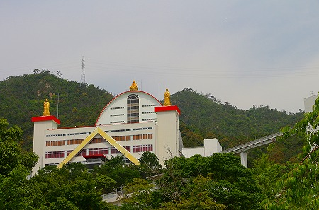
場所は廿日市市の宮島口の駅のすぐ後ろの山の中腹。
あの有名な宮島の厳島神社の水上鳥居から廿日市サイドを見るとこ
この建物が鳥居の真ん中にデーンとそびえているのだ。
なので宮島に行かれた大抵の方はあの鳥居の向こうにそびえているコレを見ているはず、なのである。
ここには海の見える杜美術館というかなりちゃんとした美術館も併設している。
しかも美術館のサイトなどからは教団の関連を一切匂わせないので、中には美術館だけ見て宗教施設だと判らずに帰っていく人もいるのだろう。
駐車場からは整備された小奇麗な遊歩道を歩いていく。
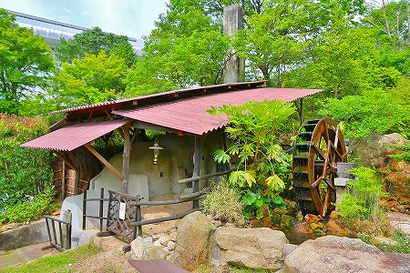
この教団の悪口を延々と書いたメールなども頂戴していたので果たしてどんな怪しい施設なのか、とやや心配だったが、今のところ実に美しいところである。
いや、このまま最後まで美しい施設でも結構なのだが、そうでなくても当方としてはやぶさかではないですよ。
そうこうしている内に建物が近づいてきた。
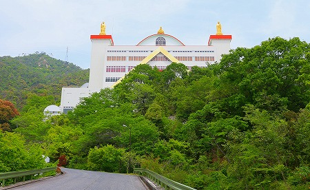
一説には
スペースシャトルをイメージしたのだとか。
なるほどそういわれればそう見えなくもないな。
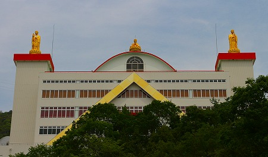
大きな石碑が建っていた。天の徳が降臨するから王舎城にみんな来なよ、的な意味だろうか。
個人的には天徳以上の素晴らしいサムシングが降臨していただきたいんですけど…。
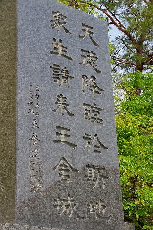
梵字がぎっちり刻まれた塀に沿って歩いていくと…
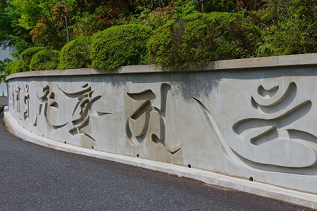
謎のコンクリのウサギが現れる。チョット意味が判らず怯む。
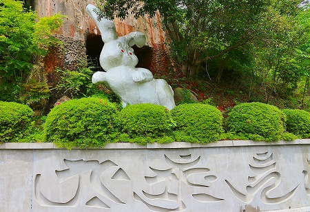
空を切り裂くような空中の橋。
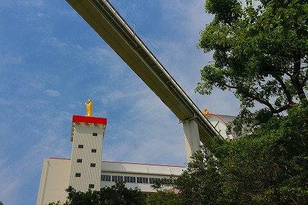
天の橋というのか。
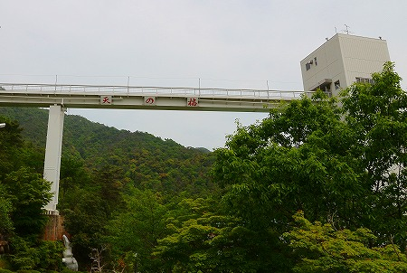
橋の右側には四角い建物がある。
メインの建物がスペースシャトルだとするとこの橋と四角い建物はさしづめ発射台ということになろう。
どうもあちこちからチラチラと視線を感じる。
美術館に向かわず、かといって信者でもなさそうな人間がウロウロしているのできっと道に迷ったのだと
心配しているんだと思う。
優しいなあ。
四角い建物から入って天の橋を渡る。おおお、いい感じ！
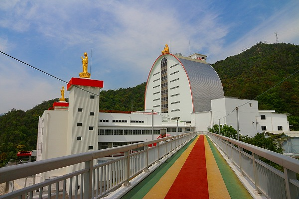
橋の上からカマボコ屋根の天辺におわす金ぴかの大仏さんを拝する。
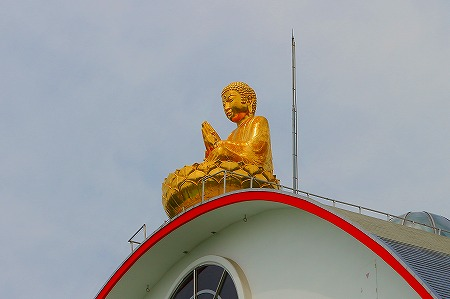
左右にはこれまた金ぴかの立像が。
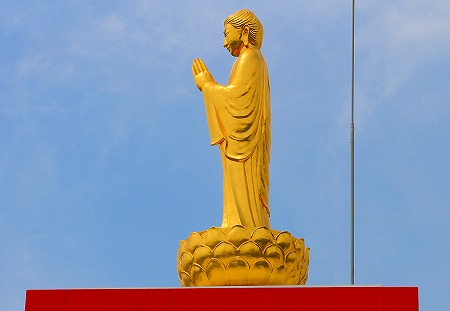
ちなみに四角い建物の中にも大仏さんがいらっしゃったが建物の中は撮影禁止だったので撮りませんでした。
と、そこにガードマンが登場。「屋内の撮影は絶対にしないで下さい」と言われる。
「もし撮影したら画像を消去させていただきますから！」との懇切親切なご忠告を残しつつガードマンは去っていった。ご親切にありがとうございます…。
…というわけで、この場所は館内一切撮影禁止なので内部の写真はありません。
極端に写真撮影を嫌うこの教団、理由の如何は判らないが、その姿勢を最大限に尊重させていただき、内部は撮らず、外部のみ
力いっぱい撮らせていただきました。
さあ、ココから先は文字ばっかしだぞ！
橋を渡るとそこは
宝物館。美術館とは全く趣の異なる展示施設である。
先ほどのガードマンとのやり取りを見ていたのか、それとも入場時点からマークされていたのか、受付の方も「うわっ、来た」的な雰囲気。
…いや、こっちの被害妄想かもしれませんけどね。
入り口で説明を受ける。曰く、宝物館内部は
撮影禁止。はいはい判ってます。
で、カメラを受付に預けさせられた。
展示がとっても面白いので見学者が夢中になってカメラをなくしたら大変だから預かっていただけるのだろう。ありがたいことです。
ただ、預かっている間に画像を見られたりすると困るなあ。
だって、ここに来る直前に撮ってたのが
道端で大騒ぎしているおっさんだもの。
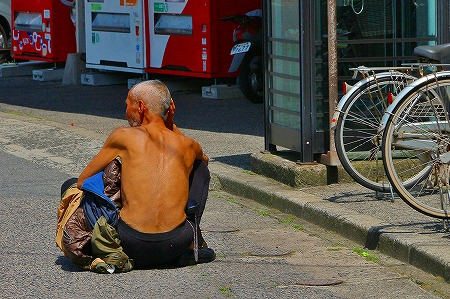
んで、その前が
煤けきったちらし寿司のサンプルだもの。
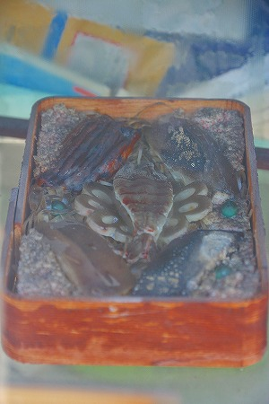
…た、頼むから画像チェックとかしないでね…。
というわけで、内部はわざわざ係の方が案内してくれるという。
決して監視しているのではなく、この施設のことを理解してもらいたい、という崇高な使命感に満ちた行為なのだ…と信じたい。
説明によるとこの宝物館は地上6階地下2階から構成されていて5階と6階は信者以外は入れないので見学は4階からとなる。
4階から地下2階までの6フロアがそれぞれ六道界に見立ててあるという。
うわー、すっげー面白そう！
で、入り口からエレベーターに乗って4階に。エレベーターに乗るまでの間、展示がチラッと見えてしまったがこれは後のお楽しみ。
で、4階に到着。そこは
天界と呼ばれているフロア。
信者しかいけないという5階への階段があり、気になったのでチラッと見たのだが、それだけで係の方の矢のような視線が。
い、行きませんよ…。
で、天界である。
そこには金ぴかの観音サマやお地蔵サマなどが並び、まさに天界っぽい世界が展開されていた。
四天王と七福神が十福善神様として並んでたり、神仏が独自に解釈されているようだ。
何と言うか
遊園地の書き割りを8割増しにゴージャスにした感じが凄くイイ。
何となく学園祭のお化け屋敷のようなチープな展示を想像していたのだが、とんでもない！かなりちゃんとした展示だった。
おとなしく拝観しているので係りの方も安心されたのだろうか、それとも忙しいのだろうか、どこぞに去っていた。
次に3階。
人間界。
まずは
世界各国の首長の顔写真がずらっと並んでいる。
次に現れるのは信者さん手作りの死後の世界はこうなっている的なモデル。これが凄かった！
直径5メートル程の円形の台が中心から放射状に10分割されていて
人間の死後の行き先である十界の様子がジオラマで展示してあるのだ。
まるでデパートにあるバラ売りのお菓子の販売台（回転してるヤツ、今ないのか？）みたいな感じ。
そこに信者さんが一生懸命作った人形が並んでいるのだ。
特に地獄界や餓鬼界（この教団では違う呼び方をしているがややこしいので一般的な呼称に変えさせていただく）で信者さんが作ったファンシーな人形が凄惨な目に会っている場面はシュールそのもの。
いつまで見ていても飽きない。
あ、そっかこれもまた国内では貴重な立体地獄（十界だけど）のひとつなのか。
サイズは小さいけどインパクトは大きいな。
円の中央から死んだ人が湧き出てきて、最終的には周縁部の十界のどこかに納まる様子をジオラマで説明しているのだが、その壮絶なテーマとポンチな人形のギャップが凄かったです。
人形の数といい、ジオラマの規模といい相当な力作である。かなりの労力が注ぎ込まれているのは間違いない。
この宝物館で一番素敵な展示だった。廿日市市の文化財に指定してもいいのではなかろうか(いや無理か）。
で、2階。
阿修羅界
こちらは古今東西の人類の戦いの歴史をレリーフにして展示してある。
さらにや精巧な阿修羅像なども。
そして
巨大な原爆の絵が掲げられている。まさに究極の修羅だ。
そして1階。
畜生界。
十二支の女神像が並んでいる。畜生界だけに。
メモを取りながら見学していたのだが、監視カメラで「ご心配」されていたらしく何処からか別の係の方が現れて「メモはご遠慮ください」と。
わっかりました！それが教団の意思であるならばそれは
最大限に尊重させていただき、メモは取りません。心の中のメモリーにぐっさり刻ませていただきます！
そして地下1階。
餓鬼界。
このフロアには木彫の仏像がたくさんあって、木の匂いが漂っている。
巨木の中に観音像が祀られている光明観音は凄かった。
そして地下2階。
地獄界である。
先ほどエレベーターに乗る際にチラッと見ちゃったのだが、このフロアには大量の
地獄の絵が並んでいる。
その絵がスゴイ。気を失いそうな数の骸骨が丹念に緻密に執拗に大判のキャンバスにキッチキチに描き込まれているのだ。
そんな絵画が延々延々延々と続く様こそが地獄そのものだった。
これほど衝撃的な絵画群はそうそうないぞ。ホントに。
最後に丈六のお地蔵さんを拝みながら拝観、もとい見学終了。
あまりにも素敵な展示の連続だったので本当に六道を巡ってきたかのような気がしたよ。
最後にカメラを返してもらい、建物を後にした。
最後は建物を出るまでお見送りまでしていただき、誠にありがとうございます的な親切な対応であった。
この王舎城の宝物館は撮影を厳しく制限しているせいか、あまり人の口にも上らない。
しかし日本屈指のハイレベルの珍寺であることは言を待たない。
写真で紹介できないのは返す返すも残念であるが、そのめくるめくファンキーな世界を是非ともその目でご覧いただきたい。
当サイトの趣旨をご理解いただいている奇特な貴兄にはきっとご満足いただけることであろう。
まあ、若干マンマーク気味の「ご親切」が苦でなければ、だが。
お約束の教団オリジナルドリンク、
プライムテンを購入。今回はスポーツドリンクを飲んでみた。
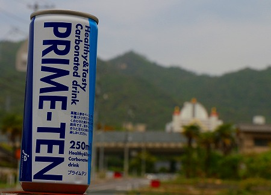
お味は梅味のスポーツドリンクでした。
さらに売店で教団オリジナルの「クリームせんべい王舎城」を購入。
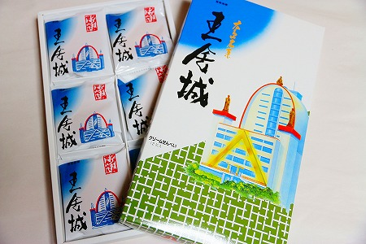
結構美味しかったです。
パッケージのインパクトが強烈なのでお土産には不向きだけど。
こんなスゴイ場所が人知れず存在しているとは
日本もまだまだ捨てたもんじゃないなー、と本気で思いましたよ。
王舎城訪問に関してはB級スポット界のクイーン、故荒川聡子さんから生前に色々なアドバイスをいただきました。今頃あの世でバイクを乗り回しているであろう荒川さん、サンキュです。